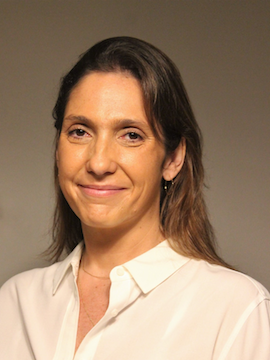

KATHERINE SPYRO SPYRIDES
Katherine Spyrides joined Boisséson Arbitration in 2018 and acts as arbitrator and administrative secretary of arbitral tribunals. Mrs Spyrides is a Brazilian lawyer with consolidated experience in resolution of complex disputes in domestic and international cases. She worked in law firms for about ten years, including Trench, Rossi e Watanabe, in Rio de Janeiro, and ReedSmith Rambaud Charot LLP (ReedSmith), in Paris, and as in-house lawyer for seven years at Vale S.A., one of the largest mining companies in the world. Mrs Spyrides has experience in arbitration, civil litigation and mediation, involving mining, logistics, construction, commercial issues, supply and services contracts and M&A disputes, among others.
Mrs Spyrides graduated in Law from the Pontifícia Universidade Católica do Rio do Janeiro (PUC-Rio) in 2002 and obtained a Masters (Master 2) in Private Law (Droit Privé Général) at Université Paris X - Nanterre, in 2006. She was admitted to the Brazilian Bar (OAB), Rio de Janeiro Chapter and to the Paris Bar through the Contrôle de Connaissances de l’École de Formation Professionnelle des Barreaux de la Cour d’Appel de Paris. Mrs Spyrides speaks fluent Portuguese, English and French.